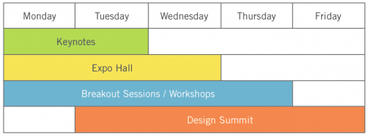
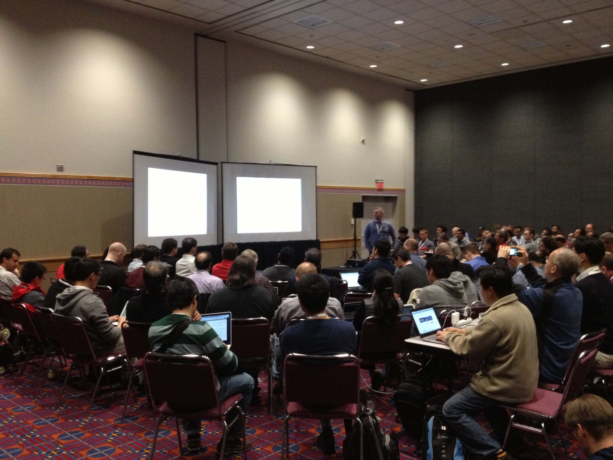

OpenStack Days Regional 'Mini-Summit' Hosted annually by local OpenStack User Groups and companies Endorsed by the Foundation Growing in number (26 in 2016)
Exercise 1 Look up an OpenStack Days event close to where you live that you would be interested in attending
OpenStack Birthday Celebration Held by local groups to celebrate another year of OpenStack 2016 was 6th birthday of OpenStack
User Group Meetups Smaller scale than OpenStack Days Events Some are more development focused while others are more user and ops focused https://groups.openstack.org/
Project Team Gathering (PTG) A gathering of projects teams and contributors Dedicated and detailed technical discussions Useful for participants if they are already working with a project team Not good as an entry point
OpenStack Design Summit Where developers meet face to face to finalize planning for the next release cycle. 
How does it work? Not a classic conference with presenter and audience more like a collaborative brainstorming session Discuss upcoming features for the next release cycle Not suitable to start learning about a topic 
Types of sessions Fishbowl sessions Open discussions, chairs organized in concentric rings People sitting in the inner circle lead the discussion No mics. Work sessions Like sprints, small groups of people work on specific themes Contributor meetups Reserved for ad-hoc meetings of project teams No predefined agenda.
Forum Replacement for Design Summit at future Summits More user focused discussion to collect feedback for developers Better entry point for new contributors finding their place in the community